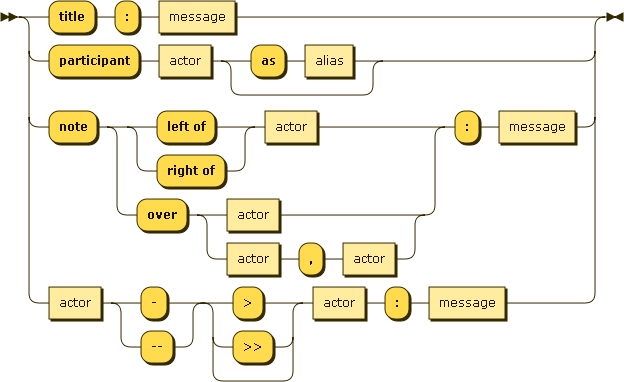

Demo. Try editing me belowAndrew->China: Says Hello
Note right of China: China thinks\nabout it
China-->Andrew: How are you?
Andrew->>China: I am good thanks!
|
This should be a diagram! If you don't see it you need Javascript enabled |
Intro
A simple javascript library to turn text into vector UML sequence diagrams. Heavily inspired by websequencediagrams.com, who offer a serverside solution. We use Jison to parse the text, and Snap.svg to draw the image.
Examples
|
Title: Here is a title
A->B: Normal line
B-->C: Dashed line
C->>D: Open arrow
D-->>A: Dashed open arrow
|
|
|
# Example of a comment.
Note left of A: Note to the\n left of A
Note right of A: Note to the\n right of A
Note over A: Note over A
Note over A,B: Note over both A and B
|
|
|
participant C
participant B
participant A
Note right of A: By listing the participants\n you can change their order
|
Syntax
The following diagram shows the syntax for the diagrams. The exact grammar can be found here in bison format.
generated by Railroad Diagram Generator
Usage
js-sequence-diagrams depends on Snap.svg and Underscore.js (or lodash). You can download all these files manually, or use "bower install bramp/js-sequence-diagrams".
Then include the following HTML:
<script src="webfont.js"></script> <script src="snap.svg-min.js"></script> <script src="underscore-min.js"></script> <script src="sequence-diagram-min.js"></script>and now you have two options. You can manually parse the text:
{kind=link}
<div id="diagram"></div>
<script>
var diagram = Diagram.parse("A->B: Message");
diagram.drawSVG("diagram", {theme: 'hand'});
</script>
or use jQuery to do all the work:
<div class="diagram">A->B: Message</div>
<script>
$(".diagram").sequenceDiagram({theme: 'hand'});
</script>
More documentation is in the official README.md